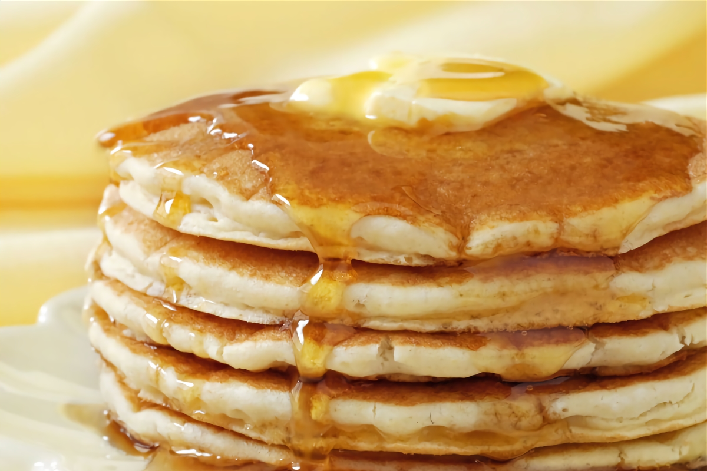

Receta de Hot Pancakes

Descripción
El panqueque, hotcake, pancake, panqueca o tortita es una torta plana, redonda y
salada o dulce, cuya masa contiene leche y está levadurizada. A veces también puede
incluir especias, esencias o extractos.
Ingredientes
- Leche La Serenísima 250 cc
- Azucar 50 g
- Huevos 2 Unidades
- Harina 200 g
- Manteca La Serenísima fundida 60 g
- Polvo de hornear 12 g
- Sal fina 1 Pizca
Paso a Paso
- Para comenzar, tamizamos los ingredientes secos. Luego, agregamos la leche poco a poco
hasta que quede todo bien integrado. Finalmente, añadimos los huevos y la manteca fundida.
- Dejamos reposar la masa durante 30 minutos.
- Pasado ese tiempo, cocinamos en una sartén de un lado. Volteamos.
- Servimos tibios con el jarabe de arce y cream cheese o cubitos de manteca.
Volver.